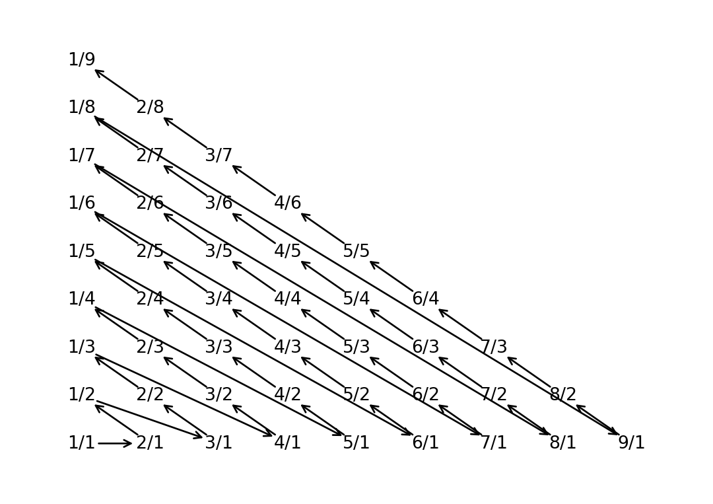

def cantor_pairing(x, y):
return int((x + y) * (x + y + 1) / 2 + y)
def cantor_pairing_nd(*args):
if len(args) == 2:
return cantor_pairing(args[0], args[1])
return cantor_pairing(cantor_pairing_nd(*args[:-1]), args[-1])
cantor_pairing_nd(1, 2, 3)One surprising fact from set theory is that integers and rational numbers have the same cardinality as natural numbers. This can be proved by a standard trick named diagonal progression invented by Cantor. The underlying function is the Cantor pairing function. Yesterday I was writing codes to hash two integers and using the Cantor pairing function turns out to be a neat way.
Formally, the Cantor pairing function \(\pi\) is defined as:
\[ \begin{gathered} \pi:\mathbb{N} \times \mathbb{N} \to \mathbb{N} \\ \pi(k_1, k_2) := \frac{1}{2} (k_1 + k_2)(k_1 + k_2 + 1) + k2 \end{gathered} \]
It can also be easily extended to multiple dimensions cases:
\[ \begin{gathered} \pi^{(n)}:\mathbb{N}^n \to \mathbb{N} \\ \pi^{(n)}(k_1, \ldots, k_{n-1}, k_n) := \pi ( \pi^{(n-1)}(k_1, \ldots, k_{n-1}) , k_n), \quad n>2 \end{gathered} \]
The Cantor pairing function is bijective. To prove that, we just need to invert it (details can be found in Wikepidia).
Simple python and C++ implementations:
struct pair_hash
{
std::size_t operator() (const std::pair<int, int>& p) const
{
return (p.first + p.second) * (p.first + p.second + 1) / 2 + p.second;
}
};
unordered_map<pair<int, int>, int, pair_hash> um;
um[make_pair(1,2)] = 0;To see the connection between the diagonal progression and the Cantor pairing function, we can do a formal analysis or directly visualize its graphical shape. The arrow direction indicates the monotonic increase of the Cantor pairing function (by 1 each time):
Code
import collections
import matplotlib.pyplot as plt
import numpy as np
d = {}
for i in range(1, 10):
for j in range(1, 10):
val = cantor_pairing(i, j)
d[val] = np.array((i, j))
od = collections.OrderedDict(sorted(d.items()))
plt.figure(facecolor="w")
plt.axis([0, 10, 0, 10])
plt.axis("off")
for k, v in od.items():
if v[0] == 9 and v[1] == 2:
break
plt.annotate(text="{}/{}".format(*v), xy=v, ha="center", va="center")
if "v0" in locals():
plt.annotate(
text="",
xy=v0 + (v - v0) * 0.2 / np.linalg.norm(v - v0),
xytext=v - (v - v0) * 0.2 / np.linalg.norm(v - v0),
arrowprops=dict(arrowstyle="<-"),
)
v0 = v
plt.show()
Reuse
Citation
BibTeX citation:
@online{li2020,
author = {Li, Chengkun},
title = {The {Cantor} {Pairing} {Function}},
date = {2020-04-25},
url = {https://pipme.github.io/posts/2020-04-25-cantor-pairing},
langid = {en}
}
For attribution, please cite this work as:
Li, Chengkun. 2020. “The Cantor Pairing Function.” April
25, 2020. https://pipme.github.io/posts/2020-04-25-cantor-pairing.